← 마스크 · 세럼 · 크림 목업으로 하이드로부스터 3종 A+ 모바일 칸 — 하나씩 보기 (초안 · 업로드 전)
칸마다 실제 폰 폭(360px)과 크게(600px). 빨간 줄 = 가장 큰 빈 띠 60px 이상인 '살펴볼 후보'(칸 높이 450px의 13%, AI 제안 기준 · 사진 속 매끈한 배경도 빈 띠로 잡히니 눈으로 판단). 마스크 v7.7 · 세럼 A+ v10 · 크림 A+ v15.
고칠 칸을 '제품 + 칸 번호'로 말씀해 주시면 됩니다.
마스크 — 모바일 7칸
마스크 A01A01_what_mobile_600x450.jpg가장 큰 빈 띠: 왼쪽 128px (y 200~328) — 공백 큼PC 칸 보기
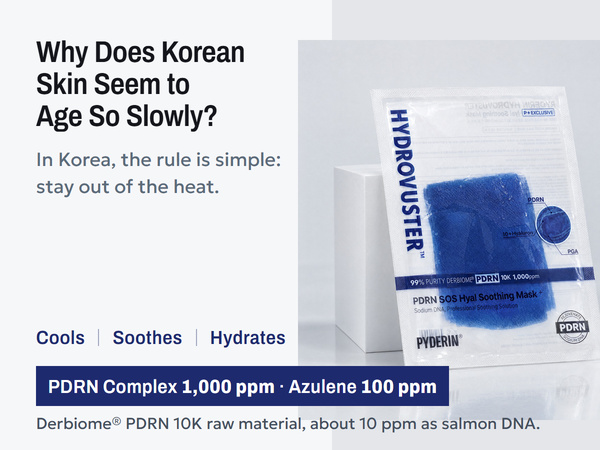
실제 폰 폭 360px크게 600px (원본 크기)
마스크 A02A02_who_mobile_600x450.jpg가장 큰 빈 띠: 왼쪽 40px (y 0~40)PC 칸 보기
실제 폰 폭 360px크게 600px (원본 크기)
마스크 A03A03_proof_mobile_600x450.jpg가장 큰 빈 띠: 오른쪽 80px (y 256~336) — 공백 큼PC 칸 보기
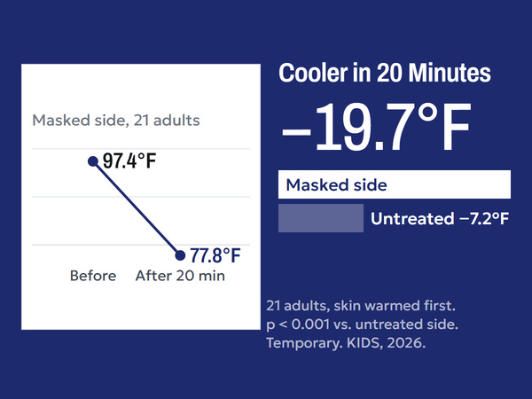
실제 폰 폭 360px크게 600px (원본 크기)
마스크 A04A04_ingredients_mobile_600x450.jpg가장 큰 빈 띠: 왼쪽 54px (y 96~150)PC 칸 보기
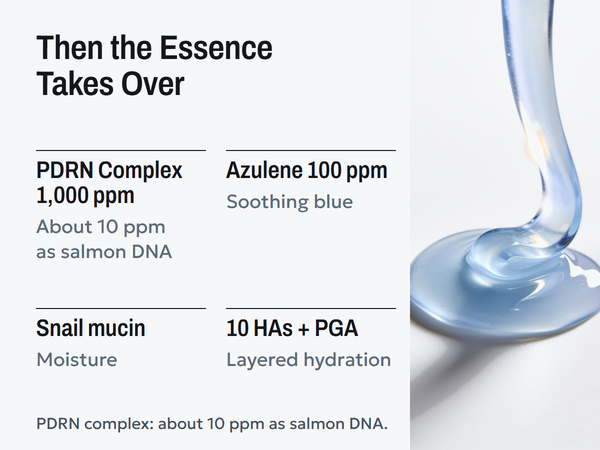
실제 폰 폭 360px크게 600px (원본 크기)
마스크 A05A05_sheet_mobile_600x450.jpg가장 큰 빈 띠: 왼쪽 158px (y 292~450) — 공백 큼PC 칸 보기
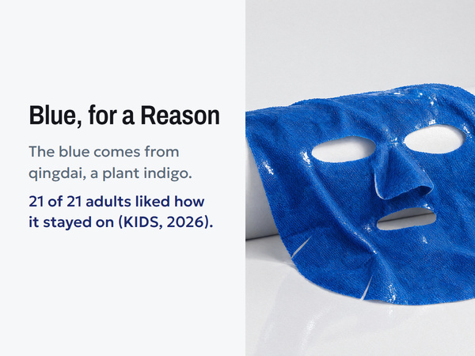
실제 폰 폭 360px크게 600px (원본 크기)
마스크 A06A06_feel_mobile_600x450.jpg가장 큰 빈 띠: 오른쪽 122px (y 0~122) — 공백 큼PC 칸 보기
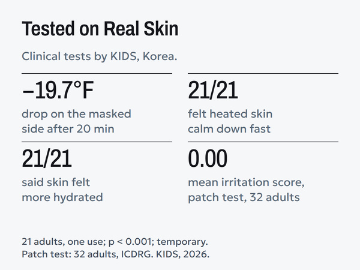
실제 폰 폭 360px크게 600px (원본 크기)
마스크 A07A07_how-to-use_mobile_600x450.jpg가장 큰 빈 띠: 오른쪽 73px (y 377~450) — 공백 큼PC 칸 보기
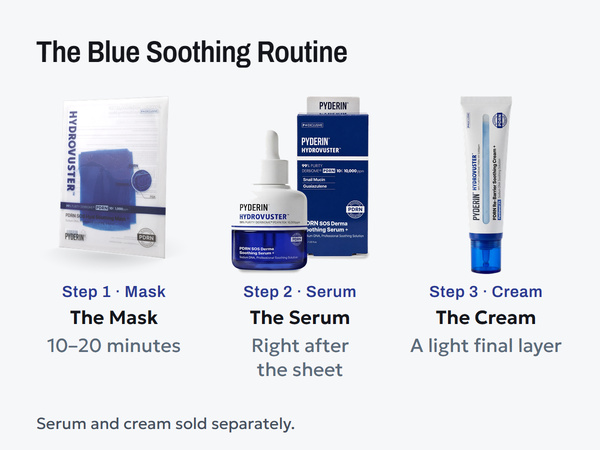
실제 폰 폭 360px크게 600px (원본 크기)
세럼 — 모바일 6칸
세럼 A01A01_what_mobile_600x450.jpg가장 큰 빈 띠: 오른쪽 82px (y 57~139) — 공백 큼PC 칸 보기
실제 폰 폭 360px크게 600px (원본 크기)
세럼 A02A02_ingredients_mobile_600x450.jpg가장 큰 빈 띠: 왼쪽 32px (y 56~88)PC 칸 보기
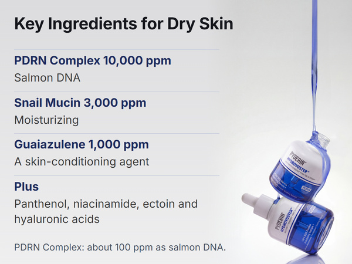
실제 폰 폭 360px크게 600px (원본 크기)
세럼 A03A03_moisture_mobile_600x450.jpg가장 큰 빈 띠: 오른쪽 47px (y 403~450)PC 칸 보기
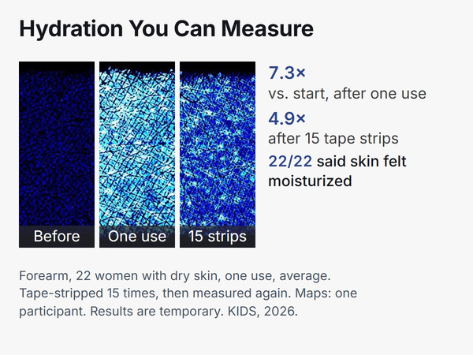
실제 폰 폭 360px크게 600px (원본 크기)
세럼 A04A04_gentle_mobile_600x450.jpg가장 큰 빈 띠: 오른쪽 109px (y 48~157) — 공백 큼PC 칸 보기
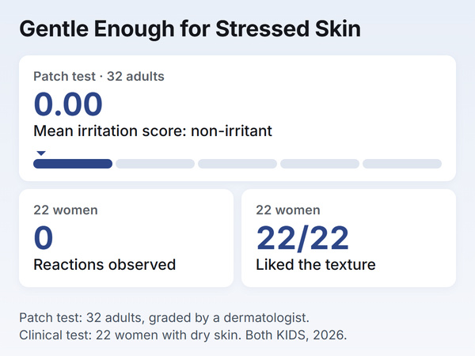
실제 폰 폭 360px크게 600px (원본 크기)
세럼 A05A05_how-to-use_mobile_600x450.jpg가장 큰 빈 띠: 오른쪽 46px (y 98~144)PC 칸 보기
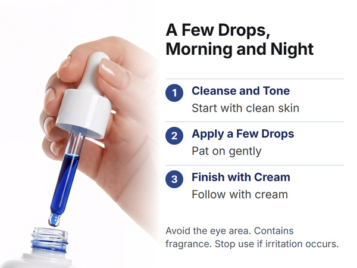
실제 폰 폭 360px크게 600px (원본 크기)
세럼 A06A06_line_mobile_600x450.jpg가장 큰 빈 띠: 왼쪽 78px (y 84~162) — 공백 큼PC 칸 보기
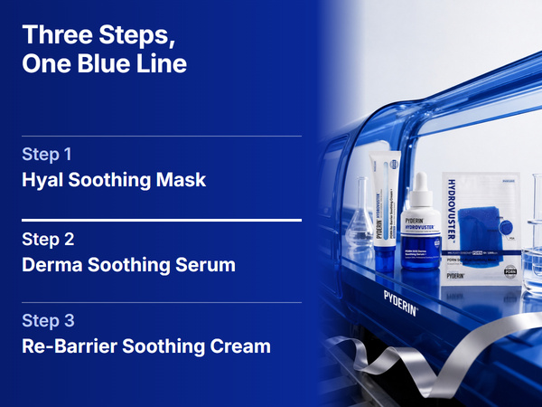
실제 폰 폭 360px크게 600px (원본 크기)
크림 — 모바일 6칸
크림 A01A01_question_mobile_600x450.jpg가장 큰 빈 띠: 왼쪽 24px (y 0~24)PC 칸 보기
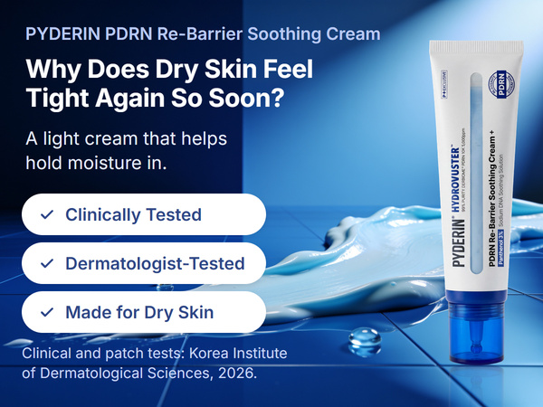
실제 폰 폭 360px크게 600px (원본 크기)
크림 A02A02_made_mobile_600x450.jpg가장 큰 빈 띠: 오른쪽 128px (y 0~128) — 공백 큼PC 칸 보기
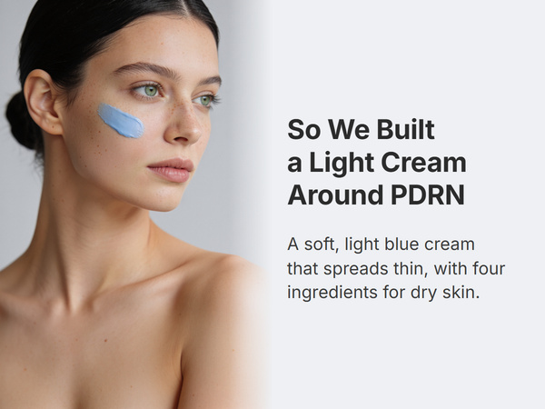
실제 폰 폭 360px크게 600px (원본 크기)
크림 A03A03_whats-inside_mobile_600x450.jpg가장 큰 빈 띠: 오른쪽 157px (y 216~373) — 공백 큼PC 칸 보기
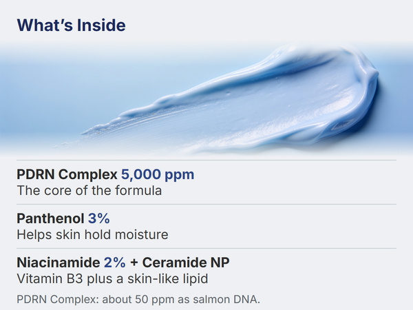
실제 폰 폭 360px크게 600px (원본 크기)
크림 A04A04_skin-study_mobile_600x450.jpg가장 큰 빈 띠: 왼쪽 58px (y 392~450)PC 칸 보기
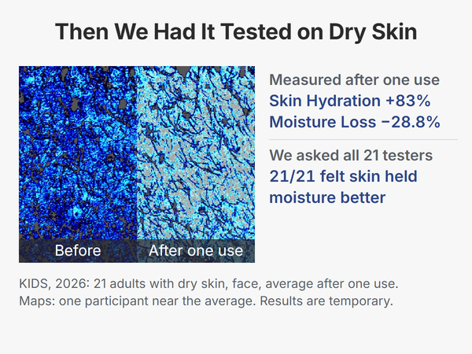
실제 폰 폭 360px크게 600px (원본 크기)
크림 A05A05_gentle_mobile_600x450.jpg가장 큰 빈 띠: 왼쪽 27px (y 280~307)PC 칸 보기
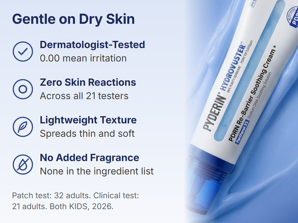
실제 폰 폭 360px크게 600px (원본 크기)
크림 A06A06_line_mobile_600x450.jpg가장 큰 빈 띠: 왼쪽 46px (y 185~231)PC 칸 보기